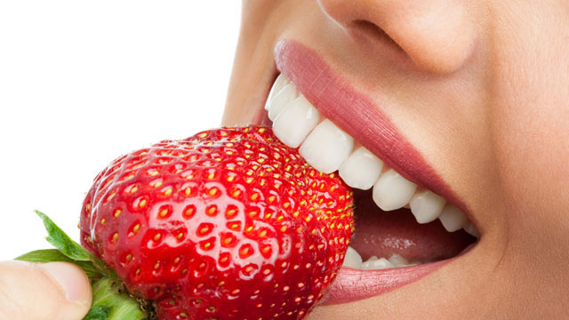
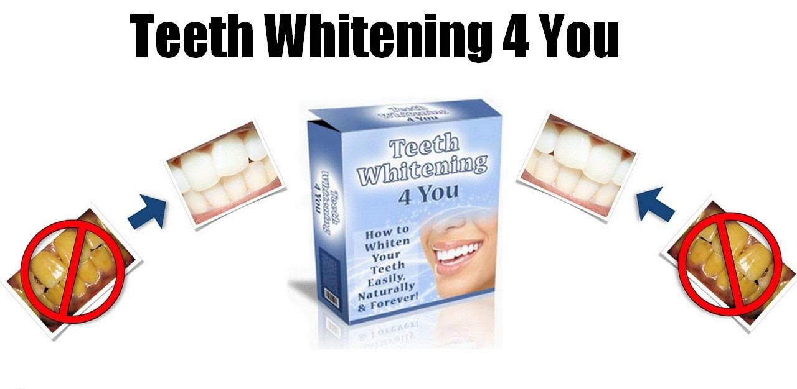

Teeth Whitening 4 You Review – Get Whiter Teeth Naturally

The book, Teeth Whitening 4 You, gives you all of the easy ways to whiten your teeth at home. The author Lucy Bennett (the author) does a great job explaining all of the different whitening methods that are available. She gives you an action plan that is easy to follow and implement and shows you what to do each and every day to get the results you are looking for.
The home remedies for whiter teeth in the book are proven to be effective, cheap, easy to implement and by far the safest way to whiten your teeth. But before I go into the details of the book that contains the secret to getting whiter teeth naturally, first let’s look at the cause of the problem.
Already Decided?
That's great! Click the button on your right and take the action now.
Why do I have stained teeth?
Teeth stains happen for a number of reasons. Some people are genetically pre-dispositioned to have greater staining on their teeth and that is by far the hardest type to combat. It usually means the staining is coming from the inside of the tooth. Unfortunately your only real option for help with that is to see a dentist.
But for other more treatable factors such as external teeth staining you will need to look at the relationship between the stains and your habits and food choices. This is where the remedies in the book will help. For instance if you are a smoker, you are likely going to see yellow stains on your teeth. If you drink red wine, coffee, and tea you will also tend to have teeth stains.
And there are even some types of food can leave staining over time. The good news about these superficial stains is that they can generally be removed without too much effort at all. And by using natural teeth whitening methods in the book regularly you will keep the stains away.
So no more purchasing dangerous over-the-counter bleaches or visiting an expensive dentist is needed. You see at home teeth whitening is simple and effective when you know what to do. Best of all Lucy Bennett lays out how to incorporate the fastest way to whiten teeth easily at home into your daily life.
So what is the best way to get whiter teeth?
Well basically you have 2 options, you can go to the dentist or do it at home with either a commercial teeth whitening kit or natural formulas. Today we are going to look over the book Teeth Whitening 4 You which goes into detail about how to get whiter teeth naturally at home.
Lucy Bennett who was a member of the dental community in the US has highly researched the subject of teeth whitening and offers some great insights into natural ways to whiten teeth at home safely and cheaply.
And by following the methods in her book you will be able to get whiter teeth without the cost of a dentist or taking risk by using chemical products. You see after reading this book, you will have a clear idea of the home remedies that are the best way to whiten teeth that actually work.
Why is a natural approach to whiter teeth better?
To put is simply it is convenient, easier, safer and much less expensive. You see homemade teeth whitener comes from products that can be purchased at a grocery store. And many of the methods you implement for teeth whitening at home are as simple as taking into account what you eat and avoiding bad habits. This is all outlined in detail in the book. But the best part is that when you choose to change your diet and avoid things that are bad for you, your overall health will improve.
Not only will you be incorporating a healthy lifestyle, but you will also avoid the risks associated with teeth bleaching methods. All bleaching gels and whitening treatments administered by your dentist can have side effects. You are likely going to experience increased tooth sensitivities while undergoing these treatments, whether self-administered or professional.
When you have tooth sensitivities, you will likely need to add in a toothpaste that counteracts the sensitivity. However these toothpastes do not always work, and you will likely be left dealing with tooth pain after use. With a natural approach to teeth whitening at home, you won’t be putting harmful chemicals in your body or subject yourself to pain.
Following the method in book, how much does it cost to get whiter teeth?
Good question. The truth is that the cost increase that you will experience when using the homemade teeth whitening pastes will not be great. Where you might spend more is on increasing the healthy foods that you eat especially if you do not currently have fresh fruits and vegetables built into your diet. However, all of the ingredients necessary for whitening teeth at home, do not cost much. In fact, some of the items like baking soda, might already be in your kitchen cabinets.
Is it easy to do?
Personally, I think that following the methods that are outlined in this book are not that difficult to do. The directions in the book on how to make the whitening pastes and products is very straight forward. In fact, some of the methods require very little preparation at all.
What do I need to do it?
You will likely already have the utensils you need to make the skin whitening paste in your kitchen. Some basic items are usually enough to make the products. Items such as bowls, scissors and spoons are really all you need.
How long does it take to get results?
Even the best teeth whitening method can take a few applications and it is no different with natural remedies. Do remember though that it might be difficult for you to judge the success of the teeth whitening methods initially because the process happens gradually. The best thing you can do to track your success is to take a picture of your teeth prior to starting and every week there onwards to compare the progress.
That way you can see the results as you go along and feel confident in practicing teeth whitening at home. In general, about a week after starting you will see a change in the color of your tooth enamel. Depending on how stained your teeth are though will determine how long it takes to get to the shade you desire.
How long do the results last?
In simple terms the results will last as long as you continue to follow the teeth whitening methods. You see the fact is that if you stop the whitening your teeth they will stain again over time. But once they are white you can probably go a few weeks without doing anything before that will start to happen.
What Are You Waiting For?
Your Purchase is Backed Up by 30 Days Money Back Guarantee. If You Don't Like The Product, Give It Back And You Will Be Refunded With No Questions Asked!
Conclusion
The fact is that it does not matter if you use chemical bleaching agents, go to the dentist or do it at home naturally you have to carve time out of your day to get the whitening done. There are some differences between the methods though, homemade teeth whitening recipes are usually the easiest to incorporate into your morning and night time routines because they take very little preparation and it does not matter if you make a mistake (like swallowing the product).
Also, you are doing it at home when your ready. Oh, and of course doing it at home naturally is painless and there is no danger. So I think that beats going to the dentist hands down! My finding is that the methods in the book really do work, they are safe, easy to do and cheap. This is the easy way to whiten your teeth. I give this book a 2 thumbs up and would recommend it to anyone seeking whiter teeth.

Related Post
Dentist Be Damned How To Get Rid Of Toothache Review - Does It Really Work?
 Dental Health/
Dental Health/
Tooth Defender 100% Natural Oral Care Review - Does It Really Work?

Recent Post
Bow Legs No More - Looking for a Permanent Remedy for Bow Legs Without the Need for Surgery?
 Beauty/
Beauty/
Purely Primal Skincare Guide Review - Does It Really Work ?
 Beauty/
Beauty/
Ageless Body System - HOW TO BE INSTANTLY AGELESS?
 Addiction/
Addiction/
QUIT SMOKING MAGIC REVIEW
 Addiction/
Addiction/
ALCOHOL FREE FOREVER - HOW TO QUIT DRINKING TODAY FROM THE PRIVACY OF YOUR HOME